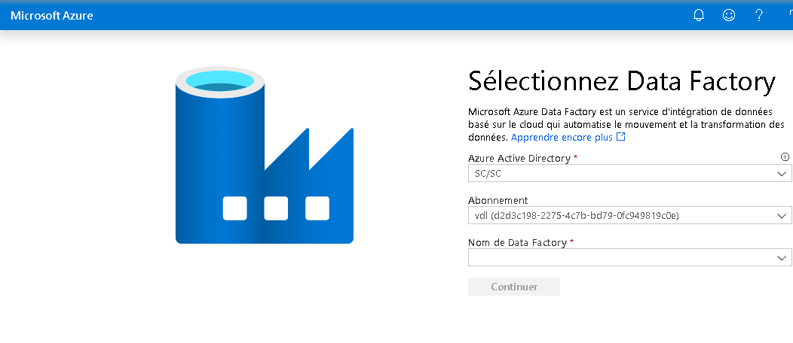
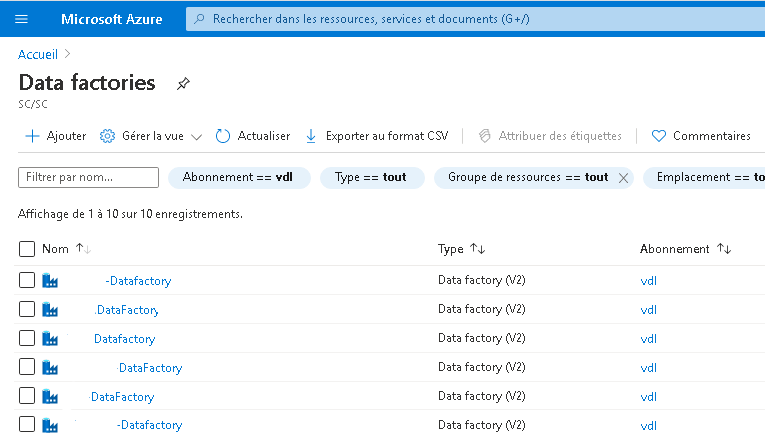
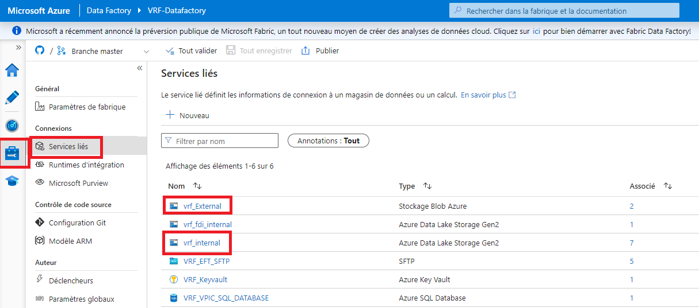
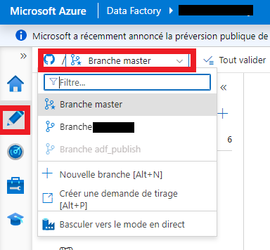
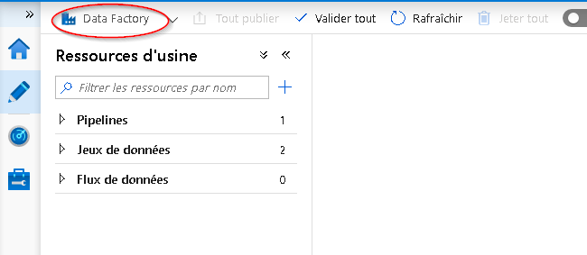
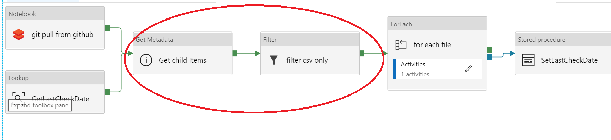

Azure Data Factory
Accès à Data Factory
Tableau de bord
Consultez la section Tableau de bord de cette documentation pour obtenir de plus amples renseignements.
-
Cliquez sur le menu Tableau de bord dans le portail Azure.

ADRESSE URL D'ADF
-
Rendez-vous à https://adf.azure.com et sélectionnez l'instance Data Factory qui a été créée pour vous.

Portail Azure
-
Dans la boîte de recherche du portail Azure, recherchez Data factories.

-
Vous devriez alors voir la liste des Data Factories auxquelles vous avez obtenu la permission d'accéder.

Auteur
Cliquez sur Author & Monitor.

Dans Data Factory, vous avez la capacité de créer et de déployer des ressources.

Voir le document Création visuelle dans Azure Data Factory pour obtenir de plus amples renseignements.
Vous pouvez également utiliser certains des divers assistants fournis sur la page d'aperçu (Overview) de Data Factory.
NOTE : La configuration de SSIS Integration n'est PAS recommandée. Si vous avez des questions, communiquez avec l'équipe de soutien par l'intermédiaire du canal Slack.

Voir les tutoriels de la documentation Azure pour obtenir plus de détails.
Accès à Data Lake à partir d'ADF
Une connexion au compte de stockage Data Lake a été préconfigurée pour votre environnement.
-
Cliquez sur l'icône de la mallette.
-
Cliquez sur Services liés.
-
Le service lié au type Stockage Azure Data Lake Gen2 est votre compte de stockage Data Lake.

Note : On vous a accordé l'accès à des contenants particuliers créés dans le compte de stockage Data Lake pour votre environnement.
Accès à la Base de données SQL Azure
Certains projets ont une instance de Base de données SQL Azure.
-
Cliquez sur l'icône de la mallette.
-
Cliquez sur Services liés.
-
Les services liés au type Base de données SQL Azure sont vos bases de données.

Enregistrement ou publication de vos ressources dans Data Factory
Azure Data Factory peut être configuré pour enregistrer votre travail dans les emplacements suivants:
- Dépôt Git
- Publier directement dans Data Factory
Git (lorsqu'accessible)
Lorsque Git est activé, vous pouvez voir votre configuration et enregistrer votre travail dans une branche particulière.
-
Cliquez sur l'icône de la mallette.
-
Cliquez sur Configuration de Git.
-
Vérifiez la configuration de Git qui a été mise en place pour vous.

-
Lorsque vous créez un flux de travail, vous pouvez l'enregistrer dans votre branche. Cliquez sur + Nouvelle branche dans le menu déroulant des branches pour créer une branche de fonctionnalités.

-
Lorsque vous serez prêt à fusionner les changements de votre branche de fonctionnalités dans votre branche de collaboration (master), cliquez sur le menu déroulant des branches et sélectionnez Créer la demande de tirage (pull request). Cette action vous dirigera vers Azure DevOps Git, où vous pourrez créer des demandes de tirage, procéder à des revues du code et fusionner les modifications dans votre branche de collaboration (master) dès que la demande aura été approuvée.
-
Après avoir fusionné les modifications dans la branche de collaboration (master), cliquez sur Publier pour publier les changements de votre code de la branche dans Azure Data Factory. Si vous obtenez un message d'erreur au moment de la publication, communiquez avec l'équipe de soutien par l'intermédiaire du canal Slack.
Service Data Factory
Lorsque Data Factory n'est pas intégré au contrôle source, vos flux de travail sont stockés directement dans le service Data Factory. Vous ne pouvez pas enregistrer les changements partiels, vous pouvez seulement utiliser l'option Tout publier, ce qui écrase l'état actuel de Data Factory avec vos changements qui deviennent alors visibles à tous.

Ingestion et transformation des données avec ADF
Runtimes d'intégration
AutoResolveIntegrationRuntime
Ne pas utiliser. Veuillez utiliser les runtimes d'intégration canadaCentralIR-4nodesDataFlow ou selfHostedCovidIaaSVnet au lieu.
Le runtime d'intégration de résolution automatique ("auto resolve") est créé par défaut avec le Data Factory, et va sélectionner le centre de données Azure le plus près des données, ce qui pourrait contrevenir aux politiques de résidence des données.
canadaCentralIR-4nodesDataFlow
Ceci est partagé par tous les utilisateurs et fonctionne tout le temps.
Peut accéder:
- Lac de données interne
- Compte de stockage externe
- Sources de données externes (Internet)
Ne peut pas accéder:
- Base de données Azure SQL
selfHostedCovidIaaSVnet
Situé à l'intérieur du réseau virtuel interne.
Peut accéder:
- Lac de données interne
- Base de données Azure SQL
Ne peut pas accéder:
- Compte de stockage externe
- Sources de données externes (Internet)
Exemple : Comment se connecter aux données de John Hopkins
-
Il y a un exemple de flux de travail qui montre la façon d'ingérer des données à partir de GitHub à l'aide d'un pipeline de Data Factory.

-
Les données peuvent être filtrées depuis Data Factory.

-
Il est aussi possible d'extraire des données de GitHub au moyen d'un code dans un notebook de Databricks.

Documentation Microsoft
- Présentation d'Azure Data Factory -- Azure Data Factory
- Créer une fabrique de données Azure à l'aide de l'interface utilisateur d'Azure Data Factory -- Azure Data Factory
- Copier des données avec l'outil d'Azure Copier des données -- Azure Data Factory
- Créer un flux de données de mappage -- Azure Data Factory
- Fonctions d'expression dans le flux de données de mappage --Azure Data Factory
- Mode de débogage du mappage de flux de données -- Azure Data Factory
- Supervision visuelle du flux de données de mappage -- Azure Data Factory
Vidéo YouTube (en anglais seulement)
- Ingest, prepare & transform using Azure Databricks & Data Factory Azure Friday
- Azure Friday Visually build pipelines for Azure Data Factory V2
- How to prepare data using wrangling data flows in Azure Data Factory Azure Friday
- How to develop and debug with Azure Data Factory Azure Friday
- Building Data Flows in Azure Data Factory